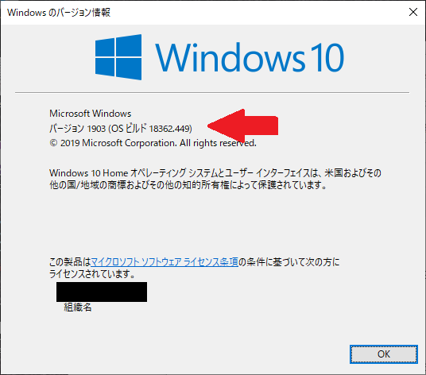

鉄は熱いうちに打て
=============================
Windowsで分析したい¶
2019-12-02
この記事は、 fintalk Advent Calendar 2019 - Adventar の2日目の記事です。
最近、プライベートのPCをmacOSから、Windows10に乗り換えました。詳しくは下のスライドで説明しています。
Windowsでも、macと同じようにJupyter Notebookを利用したい。
macOSでの私の使い方
Pythonをインストール
venvで環境構築
pipを利用してライブラリ類をインストール
ターミナルからJupyter Notebookを起動
Windowsで、できるかな？
Windows10にはWSL2というほぼLinuxやん。という環境があるらしい。 調べると「Build 18917」のOS以上でないと動かないらしい。 私の現在の環境は普通にWindowsUpdateとかしているが、「18362.476」と書いてありますけど？
（画面左下の検索窓に「winver」と打つと出てくる。）
よく調べると、一般にリリースする前に希望者に公開している「Windows 10 Insider Preview Build」というバージョンのOSでないと動かないようです。 不具合が出る可能性も高いそうです。 私はそこまでWindowsに詳しくないので、何かあった時に困る可能性があるので、来年まで待つことにしました。
そんなわけで、wslか、通常のwindows環境でJupyter Notebookを動かします。
コマンドプロンプトで動くと楽な気がするので、コマンドプロンプトに挑戦してみました。
インストールはできましたが、jupyter notebookが起動できなかったのでとりあえずあきらめました。
wslのほうはjupyter notebook起動しました。
手順は以下です。
wslインストールする。（「wsl ubuntu インストール」などで検索するとやり方が出てきます）
python3.8をインストールする（ubuntu python3.8 インストール」などで検索するとやり方が出てきます）
特定のフォルダに仮想環境を作る「python3 -m venv env」
仮想環境を有効にする「envScriptsactivate」
pipをアップデート「pip install -U pip」
関連ライブラリをインストール「pip install jupyter pandas matplotlib」
Jupyterを起動する「jupyter notebook」
画面がpower shellと書いた何も表示されない画面に一瞬で変わってしまう（なんでだろう？）
http://localhost:8888/とブラウザに入力してみましたが、トークンがわからないとログインできないようです。
「Ctrl+C」するとトークン的なのが表示されるので、どれかをコピーする。
ブラウザにペーストする。
動いた！（y/[n]の表示はEnterしましょう）
Ta-Libもインストールしたかったのですが、今回はここで終わります。今月中にTa-Libも動くようにがんばります。
明日は しんせいたろう さんです。